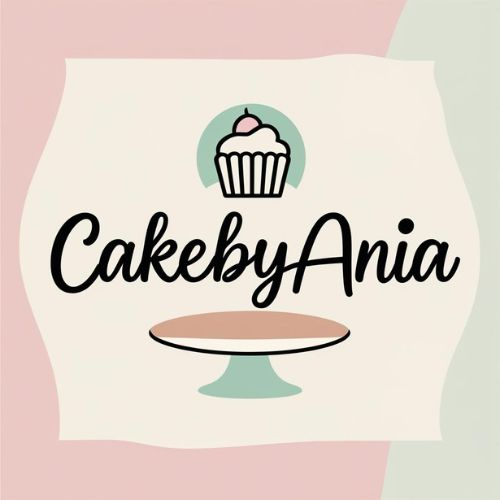

Słodkości tworzone z pasją
Deser Lotus z malinami

Kremowy, słodki, lekko karmelowy deser przełamany świeżymi malinami. Idealny na spokojne popołudnie przy kawie lub herbacie ☕
Składniki
- 250 g mascarpone
- 200 ml śmietanki 36%
- 2 łyżki cukru pudru
- 2 łyżki masła orzechowego
- 4–5 łyżek pasty Lotus Biscoff
- Ciastka Lotus (125g + kilka do dekoracji)
- Masło – 60 g
- Świeże maliny
📝 Sposób przygotowania
- Masło rozpuść i ostudź.
- Ciastka połącz z masłem.
- Ubij śmietankę.
- Połącz mascarpone z masłem orzechowym.
- Dodaj śmietankę.
- Układaj warstwami.
- Na wierzch wylej lekko podgrzany krem Lotus.
- Udekoruj malinami.
- Chłodź 2 godziny.
⚠️ Nie dodawaj gorącego kremu – może się zwarzyć.
Ciasto Kinder Country bez pieczenia
Kremowe, delikatne ciasto z chrupiącymi dodatkami inspirowane smakiem Kinder Country. Idealne na rodzinne spotkania i słodkie popołudnie przy kawie ☕
Składniki
- 250 g mascarpone
- 200 ml śmietanki 36%
- 2 łyżki cukru pudru
- 150 g czekolady mlecznej
- 2 łyżki miodu
- 60 g masła
- 100 g płatków kukurydzianych
- Herbatniki (ok. 200 g)
📝 Sposób przygotowania
- Masło rozpuść i ostudź.
- Herbatniki połącz z masłem i wyłóż do formy.
- Ubij śmietankę.
- Mascarpone zmiksuj z miodem.
- Połącz z ubitą śmietanką.
- Dodaj płatki kukurydziane.
- Wyłóż masę na spód.
- Na wierzchu rozłóż rozpuszczoną czekoladę.
- Schładzaj minimum 3 godziny.
⚠️ Czekolada powinna być lekko przestudzona.